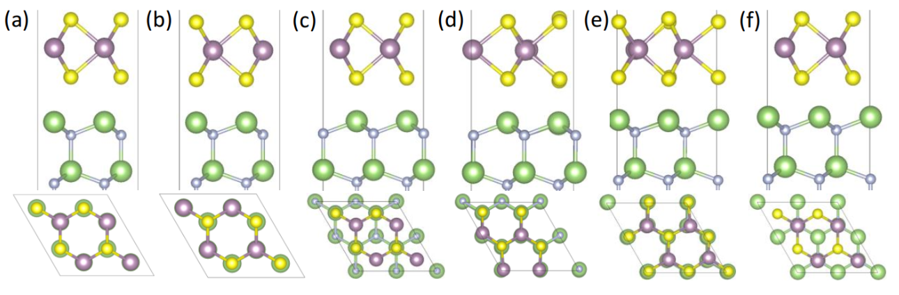

表面界面建模要点(经验小结)
原作者Zhaofu Zhang，本文转载自科学网，http://blog.sciencenet.cn/home.php?mod=space&uid=2686986&do=blog&id=1175883
在涉及到表面或者界面计算的时候，要做的第一件事便是表面或者界面建模工作。因为在网上已经有很多建模经验总结帖子，所以对一些已经广泛流传的经验（比如如何建模根号表面或者界面）就不详细介绍，而是会更系统概括性列举出需要考虑的要点并列举一些经验。
首先要对涉及到的表面和界面的类型进行分析归类：对表面来说，主要包括a). 2d材料的表面模型; b) 3d材料的表面模型。对界面来说，主要包括a). 2d/2d材料的界面模型；b). 2d/3d材料的界面模型；c). 3d/3d材料的界面模型。（注意，3d材料模型是指切面前材料就是3d，切面并在c方向加上真空组成surface slab或者interface slab后，在概念上是属于2d，即只有ab方向是无限延伸）2d材料的表面界面模型比较简单直接，放到最后面来讲。因为界面是由两种材料的surface slab构成，所以可以把表面建模中需要考虑的因素并规到界面建模需要考虑的因素之内。
对于3d材料的界面模型，首先要分两大类：A.有真空，单一界面模型；B.无真空，双界面模型。前者模型从上往下分别为：真空层/材料A/材料B，视情况在B的底端有额外的钝化原子层，即在周期性边界条件下只有一个材料A/材料B的界面；后者从上往下分别为：材料A/材料B，或者材料A/材料B/材料A，无真空无钝化原子层，即在周期性边界条件下有两个材料A/材料B的界面。
A.有真空单一界面模型，模型包括原子层和真空层。所以要考虑：
1. 考虑原子层的厚度。厚度太薄不足以充分体现出材料的表面性质，厚度太厚是会造成额外的计算资源浪费。合理的模型厚度是指既包括体现表面材料surface性质的原子层，又包括体现体材料bulk性质的原子层。至于如何确定原子层厚度，可以考虑：a. Layer-projected DOS (LDOS)判断, b. 根据averaged potential即功函数判断, c.根据quantum confinement判断，d.根据论文中取几层判断。这里结合我的论文[1]介绍下根据LDOS如何判断：
![Fig. 1 The local density of states of each layer in (F:\notebook\vasp-tut-fig\hetero1.png) GaN (001) and (b) HfO2 (001) surface model for layer thickness test. The vertical lines are given to identify the VBMs and CBMs. [1]](http://blog.wangruixing.cn/images/zhaofu-hetero/hetero1.png)
Fig. 1 The local density of states of each layer in (a) GaN (001) and (b) HfO2 (001) surface model for layer thickness test. The vertical lines are given to identify the VBMs and CBMs. [1]
以上图我发表的论文HfO2/GaN界面模型为例[Ref. 1, 原图在SI文件中] 介绍。建立一个很厚的GaN表面slab，然后直接算DOS即可。然后做出每一层的LDOS画在一起，会发现最表面几层原子是存在表面态，以及因为quantum confinement表面几层的bandgap会比较大。随着层数厚度加深会发现surface state消失且VBM CBM的能量位置趋于稳定。所以就可以以趋于稳定的层数来确定一个适合的层数厚度。
一些论文中也有介绍其他的判断方法，包括：功函数判据（建立不同层数的表面模型计算功函数，看看多少层功函数稳定）和quantum confinement判据（PBE会低估Eg，但是因为quantum confinement材料的Eg会变大，会存在某个层数使得算出来的Eg就等于或者接近实验值），这里不详细讲解了。
2. 考虑真空层的厚度。由于主流的计算软件(VASP CASTEP等) 都是基于周期性边界条件, 所以实际的计算模型在c方向是原子层/真空层/原子层/真空层/…无限重复模型。所以当真空层较薄时候，原子层会跟它的image structure镜像结构存在interaction造成误差；但是真空层太厚又会导致计算量增大。测试真空层厚度常用的方法是averaged potential即功函数方法：做出averaged potential曲线，看真空区域是否是平的。 经验性的数据是：真空一定不能小于10A，15-20A为宜，20-30A更好。
3. 考虑终端钝化即bulk termination。切出来的slab模型通常(注)在最上层和最下层存在悬挂键（dangling bonds, DB）。在表面或者界面处的悬挂键是真实存在的，对他们的不同处理可以反应表面界面的不同属性。但是最下层的悬挂键却不应该存在，因为这部分的原子层在模拟体相bulk properties，所以需要进行合理的钝化处理。最常见的方式是加氢（或者赝氢）钝化，具体方式为：计算出来悬挂键的电子数目N，然后选择2-N个电子的赝氢即可。以III-V为例，可以参考我的文章[1-5]中均有提及：对于Ga，每一个DB有0.75e，所以需要1.25e的赝氢钝化；对于N，每一个DB有1.25e，所以需要0.75e的赝氢钝化。
对于加赝氢的位置：通常选DB切开之前的键的中点位置加赝氢。另外，对于离子型金属氧化物，除了加H钝化外，还可以选择均匀去掉半层O来钝化，可以参考[1]中对HfO2的处理。
注：对non-polar surface是不存在悬挂键，比如cubic 材料的 (110)面；2d材料的情况切出来单层也通常没有悬挂键。
4. 切出来晶格匹配lattice matched表面slab。晶格匹配即包括ab晶格常数匹配，也包括ab夹角相等。对于semiconductor/semiconductor or insulator/semiconductor，建议mismatch不要超过5%。对于metal/semiconductor or metal/insulator来说，考虑到金属有较好的延展性，形变并不太会影响金属的性质（比如功函数）所以mismatch tolerance 可以大一些，但是最好不要超过10%。
如何确定matched的界面呢，可以考虑如下的旋转方案：先对模型做很大的扩胞，只看一层原子，找出某个晶格参数下俩surface slab的晶格参数是matched，然后就可以根据根号建模方案切割表面即可。cleave surface的细节可以网上参考前人分享的根号建模经验帖，这里就不展开讲了。
![Fig. 2 (F:\notebook\vasp-tut-fig\hetero2.png) Ga monolayer of the GaN (001) surface and (b) Hf monolayer of the HfO2 (001) surface. Red atoms are Ga, and purple atoms are Hf. [1]](http://blog.wangruixing.cn/images/zhaofu-hetero/hetero2.png)
Fig. 2 (a) Ga monolayer of the GaN (001) surface and (b) Hf monolayer of the HfO2 (001) surface. Red atoms are Ga, and purple atoms are Hf. [1]
另外注意，在拼接界面的时候要确定界面的晶格常数，通常是要选择基底材料（下层材料）的晶格常数做为界面材料的晶格常数，即保持下层材料晶格常数不变，改变上层金属或者介质层的晶格常数，以此来模拟实验中材料生长的细节性质。
5. 初始构型的确定。由于界面模型是人工直接build layer产生，界面成键细节不同会很大程度上影响系统总能；对于初始层间距的选择也是如此：合理的初始层间距可以很大的减小计算量。并且，DFT在做结构优化的时候，有可能陷入local energy minimum而不是 global energy minimum。为了尽量找到一个较为合理的初始构型，可以做movement test.
![Fig. 3 The movement test of HfO2 surface in (F:\notebook\vasp-tut-fig\hetero3.png) z, (b) y and (c) x direction when GaN surface is fixed in the GaN/HfO2 interface model. [1]](http://blog.wangruixing.cn/images/zhaofu-hetero/hetero3.png)
Fig. 3 The movement test of HfO2 surface in (a) z, (b) y and (c) x direction when GaN surface is fixed in the GaN/HfO2 interface model. [1]
以上图我发表的论文HfO2/GaN界面模型为例[Ref. 1, 原图在SI文件中] 介绍。Firstly, fix HfO2 (001) surface, move GaN (001) surface in z direction step by step, perform self-consistently calculation, and find the lowest energy position along z direction (see Figure S5(a)). Starting from the point with lowest energy, move GaN along x-(see Figure S5(c)) and y-(see Figure S5(b)) direction and locate the lowest energy before a full structure relaxation.
6. 固定优化。这里包括两个固定：固定晶格常数，即不改变晶胞仅优化原子结构；通常选择固定最底层赝氢（以及靠近赝氢的一层或者几层bulk layers)来更好的模拟bulk properties。
B.无真空，双界面模型，模型无真空，是由两层界面组成。要考虑：
1. 考虑原子层的厚度。基本同A1。因为模型不包含真空，每一个界面两侧都是原子层，受screening effect的影响，原子层厚度其实可以比单界面模型稍薄一些。但是依然最好先做layer thickness test。
2. 不需要考虑真空层。由于双界面模型是存在两个完全相同的界面，没有真空层，计算量也就可以略小一些。
3. 不需要考虑终端钝化即bulk termination。由于双界面模型是存在两个完全相同的界面，一样的bonding characteristics, 所以不存在不合理的悬挂键，不需要考虑终端钝化/悬挂键处理。
4. 切出来晶格匹配lattice matched表面slab。基本同A4。
5. 初始构型的确定。基本同A5。
6. 固定优化。无真空模型，但是因为存在interfacial bonding and interfacial interaction是会造成键长（层间距）改变，所以可以用固定ab方向、开放c方向晶格常数方案来做结构优化。并且固定基底材料的中间原子层即可。
通过以上对比A.有真空单一界面模型, B.无真空双界面模型的建模要点，可以发现，B.无真空双界面模型计算量可以小一些，但是它要求必须是对称的模型，保证两个界面在建模时候完全相同。所以对于一些材料不适合这个建模方案。
注意：上述内容仅围绕表面界面建模的要点进行描述。对于表面材料，通常在表面存在surface reconstruction；对于界面材料，需要考虑electron counting rule。这些更复杂的考虑是要具体情况具体分析，这里不展开详细描述。关于界面考虑electron counting rule的例子，可以参考我的论文[5]以及更多其他的论文。
对于2d材料的表面界面模型，相对来说比较简单，通常来说只需要考虑真空厚度/固定优化即可。
在2d/2d 异质结中，两侧的surface slab就具有很高的对称性。这样的对称性很高的异质结界面材料，如何确定一个合适的初始结构，以我MoS2/GaN 2d/3d 异质结[Ref. 2, 原图在SI文件中]为例讲一下。(虽然我的体系是2d/3d界面，但是方法是一样的)

Fig. 4 relaxed MoS2/GaN heterostructures with various high-symmetry atomic arrangements.[2]
界面两侧的材料本身就具有高对称性，且基本上是以vdW相互作用连接。可以：首先根据高对称性原则，得到几个不同的初始结构（上图的6个type）；然后对每一个type调整其层间距，算静态能量，找到他们的能量最低层间距，即为这个type的最佳初始构型；再从6个最佳初始构型中选择能量最低的来做系统研究即可。
以上便是我阅读文献、结合自己的经验做的一些关于表面界面建模中的要点/经验小结，如果有任何不对，欢迎及时联系我做修改。另外欢迎引用我的文章，即帖子中提及的[1-5]。
转载出处：http://blog.sciencenet.cn/blog-2686986-1175883.html
[1] Zhaofu Zhang, et al, ACS Appl. Mater. Interfaces 2015, 7, 5141−5149
[2] Zhaofu Zhang, et al, ACS Appl. Mater. Interfaces 2018, 10, 17419−17426
[3] Zhaofu Zhang et al, Appl. Phys. Express 11 081003 (2018)
[4] Zhaofu Zhang et al, IEEE Trans. Electron Devices 2017 64 (10), 4036-4043
[5] Zhaofu Zhang et al, Appl. Phys. Lett. 114, 161601 (2019)